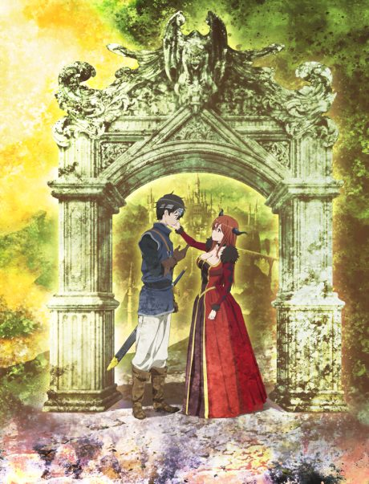
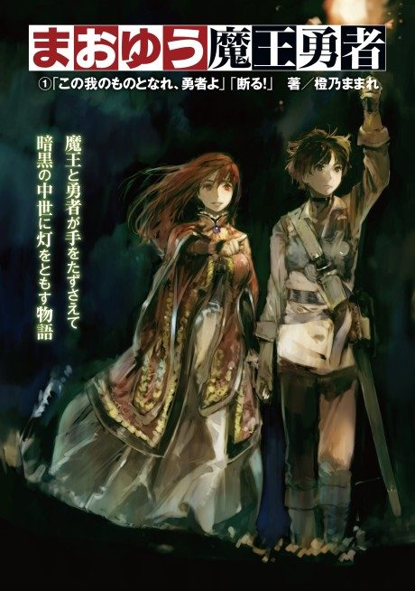

Maoyu: Archenemy & Hero
まおゆう魔王勇者
After the anime, read the light novel from Volume 5.
7.0AniList score
—Animeter, no votes yet
12episodes
Is it worth pushing through?
Built from what visitors report across all 12 episodes.
Loading reports…Checking what other people said about this one.
Sign in above with your email to add your report.